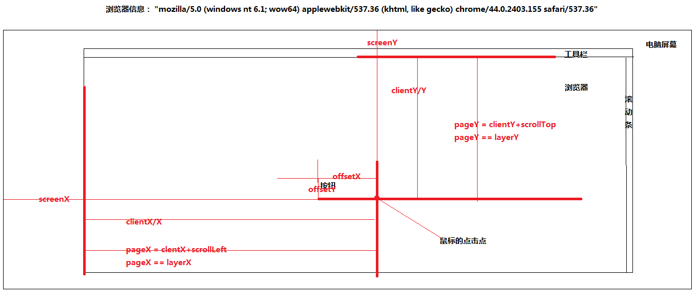

js事件机制
事件从根节点开始，逐级派送到子节点，若节点绑定了事件动作，则执行动作，然后继续走，这个阶段称为“捕获阶段(Capture)”；
执行完捕获阶段后，事件由子节点往根节点派送，若节点绑定了事件动作，则执行动作，然后继续走，这个阶段称为“冒泡阶段(Bubble)”。

js位置有关的属性之间的关系
screenX/screenY 点击点到电脑屏幕左上角的距离
clientX/clientY 点击点到浏览器左上角的距离（除去工具栏的）
pageX/pageY 点击点到页面（html）左上角的距离，其实等于clientY +scrollTop 的距离
offsetX/offsetY 点击点到事件源左上角的距离
js event有用的属性
button: 0, // 0左键，1中建，2右键
currentTarget //当前监听的元素
eventPhase: 3,//返回事件传播的当前阶段。它的值是1,2,3，它们分别表示捕获阶段、正常事件派发和起泡阶段。（IE1,4,2）
path：Array //路径
srcElement/target: //事件源对象
timeStamp:1440400598315 //时间戳